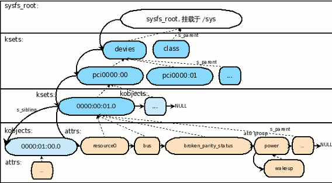

sysfs

sysfs虚拟文件系统是使用kset,kobject,ktype组成一个有层次结构的模型，我们可以通过这个虚拟文件系统查看当前平台中的所有设备。内核也可以通过sysfs向上层传递参数。
sysfs接口api
class_create
在/sys/class目录下创建class类目录,
parameter：THIS_MODULE ， class_name
return： struct class 结构体
1 | class_create(THIS_MODULE, "class_name"); |
kobject_create_and_add
在/sys目录下创建目录
parameter：class_name ，struct kobject *parent
1 | struct kobject *kobject_create_and_add(const char *name, struct kobject *parent) |
sysfs_create_file
在kobj对应目录下创建attr对应属性文件
parameter： kobj 在kobj目录下创建， attr属性文件
1 | static int sysfs_create_file(struct kobject *kobj, const struct attribute *attr); |
device_create_file
1 | /** |
sysfs_create_group
sysfs_create_group - given a directory kobject, create an attribute group
kobj: The kobject to create the group on
grp: The attribute group to create
1 | int sysfs_create_group(struct kobject *kobj,const struct attribute_group *grp) |
sysfs_create_groups
sysfs_create_groups - given a directory kobject, create a bunch of attribute groups
kobj: The kobject to create the group on
groups: The attribute groups to create, NULL terminated
1 | int sysfs_create_groups(struct kobject *kobj, |
strcut attribute
1 | struct attribute *demo_attr[] = { |
DEVICE_ATTR
1 |
|
代码实例
使用内核提供的实例代码：samples/kobject/kset-example.c
1 | /* |
debugfs
DebugFS，顾名思义，是一种用于内核调试的虚拟文件系统，内核开发者通过debugfs和用户空间交换数据。通常情况下，最常用的内核调试手段是printk。但printk并不是所有情况都好用，比如打印的数据可能过多，我们真正关心的数据在大量的输出里不是那么一目了然；或者我们在调试时可能需要修改某些内核变量，这种情况下printk就无能为力，而如果为了修改某个值重新编译内核或者驱动又过于低效，此时就需要一个临时的文件系统可以把我们需要关心的数据映射到用户空间。
debugfs接口api
debugfs_create_dir
1 | /** |
debugfs_create_file
1 | /** |
代码实例
下方代码的效果：在/sys/kernel/debug下创建bm_battery_debug目录，以及在此目录下创建bm_battery_vadc文件，并提供了show接口，用来查询电池的电压adc和温度adc值。
2
3
4
5
6
7
8
9
10
11
12
13
14
15
16
17
18
19
20
21
22
23
24
25
26
27
28
29
30
31
32
33
34
35
36
37
38
39
40
41
42
43
44
45
46
47
48
49
50
51
52
53
54
55
56
57
58
59
60
61
62
63
64
65
66
67
68
69
70
71
72
73
74
75
76
77
78
79
80
81
82
83
84
85
86
87
88
89
90
91
92
93
94
95
96
97
98
99
100
101
102
103
104
105
106
107
108
109
110
111
112
113
114
115
116
117
118
119
120
121
122
123
124
125
126
127
128
129
130
131
132
133
134
135
136
137
138
139
140
141
142
143
144
145
146
147
148
149
150
151
152
153
154
155
156
157
158
159
160
161
162
163
164
165
166
167
168
169
170
171
172
173
174
175
176
177
178
179
180
181
182
183
184
185
186
187
188
189
190
191
192
193
194
195
196
197
198
199
200
201
202
203
204
205
206
207
208
209
210
211
212
213
214
215
216
217
218
219
220
221
222
223
224
225
226
227
228
229
230
231
232
233
234
235
236
237
238
239
240
241
242
243
244
245
246
247
248
249
250
251
252
253
254
255
256
257
258
259
260
261
262
263
264
265
266
267
268
269
270
271
272
273
274
275
276
277
278
279
280
281
282
283
284
285
286
287
288
289
290
291
292
293
294
295
296
297
298
299
300
301
302
303
304
305
306
307
308
309
310
311
312
313
314
315
316
317
318
319
320
321
322
323
324
325
326
327
328
329
330
331
332
333
334
335
336
337
338
339
340
341
342
343
344
345
346
347
348
349
350
351
352
353
354
355
356
357
358
359
360
361
362
363
364
365
366
367
368
369
370
371
372
373
374
375
376
377
378
379
380
381
382
383
384
385
386
387
388
389
390
391
392
393
394
395
396
397
398
399
400
401
402
403
404
405
406
407
408
409
410
411
412
413
414
415
416
417
418
419
420
421
422
423
424
425
426
427
428
429
430
431
432
433
434
435
436
437
438
439
440
441
442
443
444
445
446
447
448
449
450
451
452
453
454
455
456
457
458
459
460
461
462
463
464
465
466
467
468
469
470
471
472
473
474
475
476
477
478
479
480
481
482
483
484
485
486
487
488
489
490
491
492
493
494
495
496
497
498
499
500
501
502
503
504
505
506
507
508
509
510
511
512
513
514
515
516
517
518
519
520
521
522
523
524
525
526
527
528
529
530
531
532
533
534
535
536
537
538
539
540
541
542
543
544
545
546
547
548
549
550
551
552
553
554
555
556
557
558
559
560
561
562
563
564
565
566
567
568
569
570
571
572
573
574
575
576
577
578
579
580
581
582
583
584
585
586
587
588
589
590
591
592
593
594
595
596
597
598
599
600
601
602
603
604
605
606
607
608
609
610
611
612
613
614
615
616
617
618
619
620
621
622
623
624
625
626
627
628
629
630
631
632
633
634
635
636
637
638
639
640
641
642
643
644
645
646
647
648
649
650
651
652
653
654
655
656
657
658
659
660
661
662
663
664
665
666
667
668
669
670
671
672
673
674
675
676
677
678
679
680
681
682
683
684
685
686
687
688
689
690
691
692
693
694
695
696
697
698
699
700
701
702
703
704
705
706
707
708
709
710
711
712
713
714
715
716
717
718
719
720
721
722
723
724
725
726
727
728
729
730
731
732
733
734
735
736
737
738
739
740
741
742
743
744
745
746
747
748
749
750
751
752
753
754
755
756
757
758
759
760
761
762
763
764
765
766
767
768
769
770
771
772
773
774
775
776
777
778
779
780
781
782
783
784
785
786
787
788
789
790
791
792
793
794
795
796
797
798
799
800
801
802
803
804
805
806
807
808
809
810
811
812
813
814
815
816
817
818
819
820
821
822
823
824
825
826
827
828
829
830
831
832
833
834
835
836
837
838
839
840
841
842
843
844
845
846
847
848
849
850
851
852
853
854
855
856
857
858
859
860
861
862
863
864
865
866
867
868
869
870
871
872
873
874
875
876
877
878
879
880
881
882
883
884
885
886
887
888
889
890
891
892
893
894
895
896
897
898
899
900
901
902
903
904
905
906
907
908
909
910
911
912
913
914
915
916
917
918
919
920
921
922
923
924
925
926
927
928
929
930
931
932
933
934
935
936
937
938
939
940
941
942
943
944
945
946
947
948
949
950
951
952
953
954
955
* Power supply driver for the aw3215 emulator
*
* Copyright (C) 2008 Google, Inc.
* Copyright (C) 2012 Intel, Inc.
* Copyright (C) 2013 Intel, Inc.
* Author: Mike Lockwood <lockwood@android.com>
*
* This software is licensed under the terms of the GNU General Public
* License version 2, as published by the Free Software Foundation, and
* may be copied, distributed, and modified under those terms.
*
* This program is distributed in the hope that it will be useful,
* but WITHOUT ANY WARRANTY; without even the implied warranty of
* MERCHANTABILITY or FITNESS FOR A PARTICULAR PURPOSE. See the
* GNU General Public License for more details.
*/
static int adc_buff[ADC_BUFF_LEN] = {0};
static int percent_buff[PERCENT_BUFF_LEN] = {0};
static bool charge_full_mask=false;
static int bat_get_chg_cap_percent(int64_t bat_vol);
static int bat_get_dischg_cap_percent(int64_t bat_vol);
static int64_t batt_avg_adc(int64_t bat_voltage);
static int batt_avg_percent(int percent);
static int get_bm_ftm(void);
static unsigned char retry_cnt = 0;
static unsigned char init_temperature_config_OK = 0;
static unsigned char init_bm_ftm_OK = 0;
static int bm_ftm_mode = 0;
// r600 battery capacity table
//index is the percent% of battery capacity ,so index 0 is 0, index 101 is +inf
//value is in mV
//this battery's nominal capacity is:2000mAh,step is 20mAh
static int r700_chg_bat_voltage[102]=
{
0,
3309,3318,3327,3336,3345,3354,3363,3372,3381,3390,
3399,3408,3417,3426,3435,3444,3453,3462,3471,3480,
3489,3498,3507,3516,3525,3534,3543,3552,3561,3570,
3579,3588,3597,3606,3615,3624,3633,3642,3651,3660,
3669,3678,3687,3696,3705,3714,3723,3732,3741,3750,
3759,3768,3777,3786,3795,3804,3813,3822,3831,3840,
3849,3858,3867,3876,3885,3894,3903,3912,3921,3930,
3939,3948,3957,3966,3975,3984,3993,4002,4011,4020,
4029,4038,4047,4056,4065,4074,4083,4092,4101,4110,
4119,4128,4137,4146,4155,4164,4173,4182,4191,4200,
LONG_MAX
};
static int r700_dischg_bat_voltage[102]=
{
0,
3259,3268,3277,3286,3295,3304,3313,3322,3331,3340,
3349,3358,3367,3376,3385,3394,3403,3412,3421,3430,
3439,3448,3457,3466,3475,3484,3493,3502,3511,3520,
3529,3538,3547,3556,3565,3574,3583,3592,3601,3610,
3619,3628,3637,3646,3655,3664,3673,3682,3691,3700,
3709,3718,3727,3736,3745,3754,3763,3772,3781,3790,
3799,3808,3817,3826,3835,3844,3853,3862,3871,3880,
3889,3898,3907,3916,3925,3934,3943,3952,3961,3970,
3979,3988,3997,4006,4015,4024,4033,4042,4051,4060,
4069,4078,4087,4096,4105,4114,4123,4132,4141,4150,
LONG_MAX
};
static int r700_chg_bat_voltage[102]=
{
0,
3300,3320,3340,3360,3380,3400,3420,3440,3460,3480,
3500,3520,3540,3560,3580,3600,3620,3640,3660,3680,
3700,3706,3712,3718,3724,3730,3736,3742,3748,3754,
3760,3766,3772,3778,3784,3790,3796,3802,3808,3814,
3820,3826,3832,3838,3844,3850,3856,3862,3868,3874,
3880,3886,3892,3898,3904,3910,3916,3922,3928,3934,
3940,3946,3952,3958,3964,3970,3976,3982,3988,3994,
4000,4006,4012,4018,4024,4030,4036,4042,4048,4054,
4060,4066,4072,4078,4081,4084,4087,4090,4095,4110,
4119,4128,4137,4146,4155,4164,4173,4182,4191,4200,
LONG_MAX
};
static int r700_dischg_bat_voltage[102]=
{
0,
3250,3270,3290,3310,3330,3350,3370,3390,3410,3430,
3450,3470,3490,3510,3530,3550,3570,3590,3610,3630,
3650,3656,3662,3668,3674,3680,3686,3692,3698,3704,
3710,3716,3722,3728,3734,3740,3746,3852,3858,3764,
3770,3776,3782,3788,3794,3800,3806,3812,3818,3824,
3830,3836,3842,3848,3854,3860,3866,3872,3878,3884,
3890,3896,3902,3908,3914,3920,3926,3932,3938,3944,
3950,3956,3962,3968,3974,3980,3986,3992,3998,4004,
4010,4016,4022,4028,4031,4034,4037,4040,4045,4060,
4069,4078,4087,4096,4105,4114,4123,4132,4141,4150,
LONG_MAX
};
struct aw3215_battery_data {
int ctrl_gpio;
int stat_gpio;
int battery_temperature_vadc;// battery temperature vadc
int64_t battery_capacity_vadc; // battery capacity vadc
int cur_percent;
int old_percent;
bool online;
bool old_online;
bool ac_or_usb;
bool old_ac_or_usb;
bool full_changed;
bool first;
int status;
int health;
int old_health;
int present;
int old_present;
spinlock_t lock;
struct qpnp_vadc_chip *vadc;
enum qpnp_vadc_channels adc_channel;
struct workqueue_struct *volt_adc_queue;
struct delayed_work volt_adc_work;
struct power_supply battery;
struct power_supply ac;
struct notifier_block aw_notifier;
struct timer_list timer;
struct dentry *bm_aw3215_debugfs;
};
static struct aw3215_battery_data *battery_data;
static void set_cutoff_cur_func(unsigned long var);
/* add emergency hot temperature */
struct bm_temperature_me_type {
int te_status;
int te_range;
void (*bm_temperature_cb)(int);
};
enum{
BM_BATTERY_TEMP_CLASS_EMERGENCY_HOT,
BM_BATTERY_TEMP_CLASS_HOT,
BM_BATTERY_TEMP_CLASS_GOOD,
BM_BATTERY_TEMP_CLASS_COLD,
};
static void bm_temp_emergency_hot_callback(int result_adc);
static void bm_temp_hot_callback(int result_adc);
static void bm_temp_good_callback(int result_adc);
static void bm_temp_cold_callback(int result_adc);
static struct bm_temperature_me_type bm_temperature_me[] = {
{POWER_SUPPLY_HEALTH_OVERHEAT, TEMP_EMERGENCY_HOT_VOLTAGE, bm_temp_emergency_hot_callback},
{POWER_SUPPLY_HEALTH_OVERHEAT, TEMP_HOT_VOLTAGE, bm_temp_hot_callback},
{POWER_SUPPLY_HEALTH_GOOD, TEMP_COLD_VOLTAGE, bm_temp_good_callback},
{POWER_SUPPLY_HEALTH_COLD, TEMP_OVER_COLD_VOLTAGE, bm_temp_cold_callback},
};
/* add end */
extern int aw_register_client(struct notifier_block *nb);
extern int aw_unregister_client(struct notifier_block *nb);
/* add debugfs support for aw3215_battery */
static int bm_aw3215_debugfs_open(struct inode *node, struct file *file);
static int bm_aw3215_debugfs_show(struct seq_file *s, void *what);
/* add end */
static int get_bm_ftm(void)
{
struct file *filep = NULL;
char buf[3]={0};
loff_t pos = 0;
int ret = 0;
mm_segment_t old_fs;
old_fs = get_fs();
//printk("----enter get bm_ftm\n");
filep=filp_open("/etc/backup/bmftm",O_CREAT | O_RDWR,0);
if(IS_ERR(filep)){
printk("error- filp_open /etc/backup/bmftm filed!!!\n");
return -1;
}
set_fs(KERNEL_DS);
vfs_read(filep, buf, sizeof(buf), &pos);
filp_close(filep, NULL);
init_bm_ftm_OK = 1;
set_fs(old_fs);
ret = memcmp(buf,"1",1);
if(!ret){
printk("----enter get bm_ftm 1\n");
return 1;
}
else{
printk("----enter get bm_ftm 0\n");
return 0;
}
}
static void init_temperature_config(void)
{
struct file *filep;
char buf[100] = {0};
loff_t pos = 0;
mm_segment_t old_fs;
int e_cfg = 0, h_cfg = 0, g_cfg = 0, c_cfg = 0;
old_fs = get_fs();
filep = filp_open(BM_BATTERY_TEMPERATURE_CONFIG_FILE, O_RDONLY, 0);
if(IS_ERR(filep)){
//printk("aw3215_charger: error- filp_open %s filed!!!maybe do not configed or file system not inited.\n", BM_BATTERY_TEMPERATURE_CONFIG_FILE);
return ;
}
set_fs(KERNEL_DS);
vfs_read(filep, buf, sizeof(buf), &pos);
filp_close(filep, NULL);
if (strchr(buf, ','))
sscanf(buf, "%d,%d,%d,%d", &e_cfg, &h_cfg, &g_cfg, &c_cfg);
else {
pr_err("aw3215_battery15_charger: %s, error, get config temperture str:%s\n", __func__, buf);
set_fs(old_fs);
return ;
}
pr_info("aw3215_charger: %s, config temperature:%d,%d,%d,%d\n", __func__, e_cfg, h_cfg, g_cfg, c_cfg);
set_fs(old_fs);
if (e_cfg)
bm_temperature_me[BM_BATTERY_TEMP_CLASS_EMERGENCY_HOT].te_range = e_cfg;
if (h_cfg)
bm_temperature_me[BM_BATTERY_TEMP_CLASS_HOT].te_range = h_cfg;
if (g_cfg)
bm_temperature_me[BM_BATTERY_TEMP_CLASS_GOOD].te_range = g_cfg;
if (c_cfg)
bm_temperature_me[BM_BATTERY_TEMP_CLASS_COLD].te_range = c_cfg;
init_temperature_config_OK = 1;
return ;
}
static int init_bm_ftm_mode(void)
{
return get_bm_ftm();
}
static void bm_temp_emergency_hot_callback(int result_adc)
{
if(!bm_ftm_mode) {
pr_emerg("get_tmp_adc_val result_adc = %d\nemergency battery hot!!!!!!!!!!!!!!!!!!!!!!!!!!!!!\n",result_adc);
kernel_power_off();
}
else
pr_emerg("get_tmp_adc_val result_adc = %d\nemergency battery hot, but it is now ftm mode 1.!!!!!!!!!!!!!!!!!!!!!!!!!!!!!\n",result_adc);
return ;
}
static void bm_temp_hot_callback(int result_adc)
{
if(!bm_ftm_mode) {
pr_emerg("get_tmp_adc_val result_adc = %d\nbattery hot!!!!!!!!!!!!!!!!!!!!!!!!!!!!!\n",result_adc);
if (retry_cnt > BM_TEMPERTURE_HOT_RETRY) {
kernel_power_off();
}
retry_cnt++;
}
else
pr_emerg("get_tmp_adc_val result_adc = %d\nbattery hot, but it its now ftm mode 1.!!!!!!!!!!!!!!!!!!!!!!!!!!!!!\n",result_adc);
return ;
}
static void bm_temp_good_callback(int result_adc)
{
retry_cnt = 0;
return ;
}
static void bm_temp_cold_callback(int result_adc)
{
retry_cnt = 0;
if(!bm_ftm_mode) {
pr_emerg("get_tmp_adc_val RESULT_UNSUP_HOST_adc = %d\nbattery cold!!!!!!!!!!!!!!!!!!!!!!!!!!!!!\n",result_adc);
kernel_power_off();
}
else
pr_emerg("get_tmp_adc_val result_adc = %d\nbattery colde, but it is now ftm mode 1.!!!!!!!!!!!!!!!!!!!!!!!!!!!!!\n",result_adc);
return ;
}
static int get_tmp_adc_val(struct aw3215_battery_data *data)
{
int32_t rc;
struct qpnp_vadc_result adc_result;
int result_adc,a;
long sum=0;
int num = sizeof(bm_temperature_me) / sizeof(struct bm_temperature_me_type);
int i = 0;
//printk("get_tmp_adc_val start...\n");
if(!data->vadc)
return 0 ;
for(a=0;a < 6;a++)
{
rc = qpnp_vadc_read(data->vadc,P_MUX6_1_1,&adc_result);
if (rc) {
printk("error- reading tmp adc channel rc = %d\n", rc);
return rc;
}
sum += (int)adc_result.physical;
}
result_adc = (int)(sum/6);
//printk("get_tmp_adc_val battery_temperature_vadc = %d\n",result_adc);
switch(result_adc){
case 0 ... CPG_TEMP_HOT_VOLTAGE:
case 0 ... TEMP_HOT_VOLTAGE:
data->health = POWER_SUPPLY_HEALTH_OVERHEAT;
data->present = 1;
if(get_bm_ftm())
kernel_power_off();
break ;
case CPG_TEMP_HOT_VOLTAGE + 1 ... TEMP_COLD_VOLTAGE:
case TEMP_HOT_VOLTAGE + 1 ... TEMP_COLD_VOLTAGE:
data->health = POWER_SUPPLY_HEALTH_GOOD ;
data->present = 1;
break ;
case TEMP_COLD_VOLTAGE + 1 ... TEMP_OVER_COLD_VOLTAGE:
data->health = POWER_SUPPLY_HEALTH_COLD;
data->present = 1;
if(get_bm_ftm())
kernel_power_off();
break ;
default:
data->health = POWER_SUPPLY_HEALTH_UNSPEC_FAILURE ;
data->present = 0;
break ;
}
for (i = 0; i < num; i++)
{
if(result_adc < bm_temperature_me[i].te_range){
break;
}
}
printk("result_adc = %d\n",result_adc);
printk("bm_ftm_mode = %d\n",bm_ftm_mode);
if(i != num){
printk("bm_temperature_me[%d].te_status = %d\n", i, bm_temperature_me[i].te_status);
data->health = bm_temperature_me[i].te_status;
data->present = 1;
if (bm_temperature_me[i].bm_temperature_cb)
bm_temperature_me[i].bm_temperature_cb(result_adc);
}else{
printk("power supply health unspec failed!\n");
data->health = POWER_SUPPLY_HEALTH_UNSPEC_FAILURE;
data->present = 0;
}
// if(data->old_health != data->health || data->old_present != data->present)
// power_supply_changed(&data->battery);
// data->old_health = data->health;
//data->old_present = data->present;
//printk("get_tmp_adc_val battery_temperature_vadc = %d\n",result_adc);
//printk("get_tmp_adc_val end...\n");
return result_adc;
}
static int r700_get_battery_voltage(struct aw3215_battery_data *data,enum qpnp_vadc_channels channel)
{
int32_t rc;
struct qpnp_vadc_result adc_result;
int percent,a;
int64_t bat_voltage =0;// in uV
int64_t r700_bat_voltage =0;
//printk("r700_get_battery_voltage start...\n");
if(!data->vadc)
return 0 ;
for(a=0;a < 6;a++)
{
rc = qpnp_vadc_read(data->vadc,channel,&adc_result);
if (rc)
{
printk("error- reading voltage adc channel =%d,rc = %d\n",channel, rc);
return rc;
}
bat_voltage += adc_result.physical;
}
do_div(bat_voltage,6000);
r700_bat_voltage = batt_avg_adc(bat_voltage);
battery_data->battery_capacity_vadc = r700_bat_voltage;
//printk("get_battery_voltage bat_voltage = %lld\n",r700_bat_voltage);
if(data->online)
{
data->full_changed = gpio_get_value(data->stat_gpio);
if(data->full_changed){
percent = 100;
}
else{
percent = bat_get_chg_cap_percent(r700_bat_voltage);
//printk("bat_get_chg_cap_percent = %d\n",percent);
}
}
else
{
percent = bat_get_dischg_cap_percent(r700_bat_voltage);
//printk("bat_get_dischg_cap_percent = %d\n",percent);
}
// percent = bat_get_chg_cap_percent(r700_bat_voltage);
//r700_percent = batt_avg_percent(percent);
//if(percent < 2)
if(r700_bat_voltage < SHUT_DOWN_VOLTAGE)
{
kernel_power_off();
}
//printk("r700_get_battery_voltage bat_voltage = %lld\n",r700_bat_voltage);
//printk("r700_get_percent = %d\n",percent);
return percent;
}
static int aw3215_ac_get_property(struct power_supply *psy,
enum power_supply_property psp,
union power_supply_propval *val)
{
struct aw3215_battery_data *data = container_of(psy,struct aw3215_battery_data, ac);
int ret = 0;
switch (psp) {
case POWER_SUPPLY_PROP_ONLINE:
if(data->online)
{
if(data->ac_or_usb)
val->intval = 0;
else
val->intval = 1;
}else{
val->intval = 0;
//charge_full_mask=false;
}
//printk("ac get----------------------------ONLINE property intval = %d \n",val->intval);
break;
case POWER_SUPPLY_PROP_TYPE:
if(data->ac_or_usb)
//val->strval = "ac";
val->intval = 3;
else
//val->strval = "usb";
val->intval = 4;
// printk("ac get --------------------------- POWER_SUPPLY_PROP_TYPE %d \n",val->intval);
break;
default:
ret = -EINVAL;
break;
}
return ret;
}
static int aw3215_battery_get_property(struct power_supply *psy,
enum power_supply_property psp,
union power_supply_propval *val)
{
struct aw3215_battery_data *data = container_of(psy,struct aw3215_battery_data, battery);
int ret = 0;
switch (psp) {
case POWER_SUPPLY_PROP_STATUS:
val->intval = data->status;//aw3215_BATTERY_READ(data, BATTERY_STATUS);
//printk("battery get status property intval = %d \n",data->status);
break;
case POWER_SUPPLY_PROP_HEALTH:
val->intval = data->health;//aw3215_BATTERY_READ(data, BATTERY_HEALTH);
//printk("battery get health property intval = %d \n",val->intval);
break;
case POWER_SUPPLY_PROP_PRESENT:
val->intval = data->present;
//printk("battery get present property intval = %d \n",val->intval);
break;
case POWER_SUPPLY_PROP_TECHNOLOGY:
val->intval = POWER_SUPPLY_TECHNOLOGY_LION;
//printk("battery get technology property intval = %d \n",val->intval);
break;
case POWER_SUPPLY_PROP_CAPACITY:
val->intval = data->cur_percent;
//printk("battery get capacity property intval = %d \n",val->intval);
break;
default:
ret = -EINVAL;
break;
}
return ret;
}
static enum power_supply_property aw3215_battery_props[] = {
POWER_SUPPLY_PROP_STATUS,
POWER_SUPPLY_PROP_HEALTH,
POWER_SUPPLY_PROP_PRESENT,
POWER_SUPPLY_PROP_TECHNOLOGY,
POWER_SUPPLY_PROP_CAPACITY,
};
static enum power_supply_property aw3215_ac_props[] = {
POWER_SUPPLY_PROP_ONLINE,
POWER_SUPPLY_PROP_TYPE,
};
static void set_cutoff_using_func(unsigned long var)
{
int i;
gpio_set_value(battery_data->ctrl_gpio, 0);
msleep(20);
for (i=0;i<var;i++){
gpio_set_value(battery_data->ctrl_gpio, 0);
udelay(2);
gpio_set_value(battery_data->ctrl_gpio, 1);
udelay(2);
}
//printk("set_cutoff_using_func var = %ld\n",var );
}
static void get_volt_val_func(struct work_struct *work)
{
struct aw3215_battery_data *data = container_of(work,
struct aw3215_battery_data, volt_adc_work.work);
//printk("get_volt_val_func start...\n");
data->adc_channel = VBAT_SNS;
data->cur_percent = r700_get_battery_voltage(data,data->adc_channel);
if(data->first)
{
//printk("get_volt_val_func start data->first...\n");
data->first = false;
data->old_percent = r700_get_battery_voltage(data,data->adc_channel);
if(99<data->old_percent)
data->old_percent = data->cur_percent -1;
if(1 >data->old_percent)
data->old_percent = data->cur_percent +1;
}
if (!init_temperature_config_OK)
init_temperature_config();
if (!init_bm_ftm_OK)
bm_ftm_mode = init_bm_ftm_mode();
if((charge_full_mask)&&(data->cur_percent > 99)){
data->cur_percent = 100;
data->old_percent = 100;
data->status =POWER_SUPPLY_STATUS_FULL;
}else{
if(data->online)
{
//printk("get_volt_val_func start data->online...\n");
data->full_changed = gpio_get_value(data->stat_gpio);
if(data->full_changed){
charge_full_mask=true;
//printk("-----------get_volt_val_func start data->online data->full_changed = ...\n");
}
set_cutoff_using_func(CUTOFF_CUR_LEVEL);
data->status =POWER_SUPPLY_STATUS_CHARGING ;
if(data->cur_percent >= 100){
data->old_percent = 99;
data->cur_percent = 99;
}
if(data->old_percent > data->cur_percent){
data->cur_percent = data->old_percent;
}else{
data->old_percent = data->cur_percent;
}
}else{
//printk("get_volt_val_func start data->offline...\n");
data->status = POWER_SUPPLY_STATUS_DISCHARGING;
if(data->cur_percent > data->old_percent)
data->cur_percent = data->old_percent;
else
data->old_percent = data->cur_percent;
}
}
power_supply_changed(&data->battery);
msleep(3000);
data->battery_temperature_vadc = get_tmp_adc_val(data);
queue_delayed_work(data->volt_adc_queue,&data->volt_adc_work,3*HZ);
//printk(">>>>>>data->old_percent = %d\n",data->old_percent);
//printk(">>>>>>data->cur_percent = %d\n",data->cur_percent);
//printk("get_volt_val_func end...\n");
}
static int aw_notifier_callback(struct notifier_block *self,
unsigned long event, void *data)
{
//printk("aw_notifier_callback start ....\n");
struct aw3215_battery_data *pdata =
container_of(self, struct aw3215_battery_data, aw_notifier);
int *blank;
if (event == 123 ) {
blank = data;
pdata->online = true;
if (*blank == 4){
//printk("~~~~~~~~~~data = %ld blank= %d\n",event,*blank);
pdata->ac_or_usb= true;
}
else if (*blank == 5){
pdata->ac_or_usb= false;
//printk("~~~~~~~~~~data = %ld blank= %d\n",event,*blank);
}
power_supply_changed(&pdata->ac);
}else if(event == 456){
//printk("~~~~~~~~~~data = %ld *\n",event);
pdata->online = false;
//charge_full_mask=false;
power_supply_changed(&pdata->ac);
}
pdata->old_online = pdata->online;
pdata->old_ac_or_usb = pdata->ac_or_usb;
//printk("~~~~~~~~~~data = %ld *\n",event);
//printk("aw_notifier_callback end ....\n");
return 0;
}
static int bm_aw3215_debugfs_open(struct inode *node, struct file *file)
{
return single_open(file, bm_aw3215_debugfs_show, NULL);
}
static int bm_aw3215_debugfs_show(struct seq_file *s, void *what)
{
// printk("battery_data->battery_temperature_vadc = %d\n");
// printk("battery_data->battery_capacity_vadc = %d\n");
return seq_printf(s, "%d,%lld\n", battery_data->battery_temperature_vadc, battery_data->battery_capacity_vadc); // temperature vadc,capacity vadc.
}
static const struct file_operations fops_bm_aw3215_debugfs = {
.open = bm_aw3215_debugfs_open,
.read = seq_read,
.llseek = seq_lseek,
.release = single_release,
};
static int bm_aw3215_debug_fs_init(void)
{
battery_data->bm_aw3215_debugfs = debugfs_create_dir(BM_AW3215_DEBUGFS_DIR, 0);
if (!debugfs_create_file(BM_AW3215_DEBUGFS_BATTERY_FILE, S_IFREG | S_IRUGO, battery_data->bm_aw3215_debugfs, NULL, &fops_bm_aw3215_debugfs)){
pr_err("aw3215_charger: %s, init failed.\n", __func__);
return -1;
}
return 0;
}
static int aw3215_battery_probe(struct platform_device *pdev)
{
int ret;
//struct resource *r;
struct aw3215_battery_data *data;
struct device_node *np = pdev->dev.of_node;
data = devm_kzalloc(&pdev->dev, sizeof(*data), GFP_KERNEL);
if (data == NULL)
return -ENOMEM;
spin_lock_init(&data->lock);
data->battery.properties = aw3215_battery_props;
data->battery.num_properties = ARRAY_SIZE(aw3215_battery_props);
data->battery.get_property = aw3215_battery_get_property;
data->battery.name = "battery";
data->battery.type = POWER_SUPPLY_TYPE_BATTERY;
data->ac.properties = aw3215_ac_props;
data->ac.num_properties = ARRAY_SIZE(aw3215_ac_props);
data->ac.get_property = aw3215_ac_get_property;
data->ac.name = "ac";
data->ac.type = POWER_SUPPLY_TYPE_MAINS;
if (of_find_property(np, "qcom,chg-vadc", NULL)) {
/* early for VADC get, defer probe if needed */
data->vadc = qpnp_get_vadc(&pdev->dev, "chg");
if (IS_ERR(data->vadc)) {
ret = PTR_ERR(data->vadc);
if (ret != -EPROBE_DEFER)
pr_err("vadc property configured incorrectly\n");
return ret;
}
}
/* chg gpio info */
data->ctrl_gpio = of_get_named_gpio(np,"mdm9607,battery-ctrl-gpio", 0);
if (gpio_is_valid(data->ctrl_gpio)) {
ret = gpio_request(data->ctrl_gpio, "aw9625_ctrl_gpio");
if (ret < 0) {
printk("failed to request GPIO %d, error %d\n",data->ctrl_gpio, ret);
goto exit;
}
ret = gpio_direction_output(data->ctrl_gpio, 0);
if (ret < 0) {
printk("Failed to configure output direction for ctrlGPIO %d, error %d\n",data->ctrl_gpio, ret);
goto exit_gpio;
}
}
data->stat_gpio = of_get_named_gpio(np,"mdm9607,battery-stat-gpio", 0);
if (gpio_is_valid(data->stat_gpio)) {
ret = gpio_request(data->stat_gpio, "aw9625_stat_gpio");
if (ret < 0) {
printk("failed to request GPIO %d, error %d\n",data->stat_gpio, ret);
goto exit_gpio;
}
ret = gpio_direction_input(data->stat_gpio);
if (ret < 0) {
printk("Failed to configure input direction for GPIO %d, error %d\n",data->stat_gpio, ret);
goto exit_stat_gpio;
}
printk("-----data->stat_gpio==%d-------\n",gpio_get_value(data->stat_gpio));
}
ret = power_supply_register(&pdev->dev, &data->ac);
if (ret)
{
printk("register power supply ac failed \n");
goto exit_gpio;
}
//printk("register power supply ac success!!!\n");
ret = power_supply_register(&pdev->dev, &data->battery);
if (ret) {
printk("register power supply battery failed \n");
goto exit_supply;
}
//printk("register power supply battery success!!!\n");
data->online = false;
data->first = true ;
platform_set_drvdata(pdev, data);
battery_data = data;
INIT_DELAYED_WORK(&data->volt_adc_work,get_volt_val_func);
data->volt_adc_queue = create_singlethread_workqueue("get_vlotage_value");
queue_delayed_work(data->volt_adc_queue,&data->volt_adc_work,12*HZ);
data->aw_notifier.notifier_call = aw_notifier_callback;
ret = aw_register_client(&data->aw_notifier);
if (ret)
dev_err(&pdev->dev, "Unable to register aw_notifier: %d\n",ret);
if(bm_aw3215_debug_fs_init() < 0)
pr_err("aw3215_charger: init debugfs failed.\n");
printk("aw3215 battery init probe is gone .\n");
return 0;
exit_supply:
power_supply_unregister(&data->ac);
gpio_free(data->stat_gpio);
gpio_free(data->ctrl_gpio);
exit_stat_gpio:
if (gpio_is_valid(data->stat_gpio))
gpio_free(data->stat_gpio);
exit_gpio:
if (gpio_is_valid(data->ctrl_gpio))
gpio_free(data->ctrl_gpio);
exit:
kfree(data);
return ret ;
}
static int aw3215_battery_remove(struct platform_device *pdev)
{
struct aw3215_battery_data *data = platform_get_drvdata(pdev);
power_supply_unregister(&data->battery);
power_supply_unregister(&data->ac);
aw_unregister_client(&data->aw_notifier);
del_timer(&data->timer);
if(battery_data->bm_aw3215_debugfs)
debugfs_remove_recursive(battery_data->bm_aw3215_debugfs);
battery_data = NULL;
return 0;
}
static struct of_device_id aw3215_match_table[] = {
{ .compatible = "awinic,aw3215",},
{ },
};
static struct platform_driver aw3215_battery_device = {
.probe = aw3215_battery_probe,
.remove = aw3215_battery_remove,
.driver = {
.owner = THIS_MODULE,
.name = "aw3215-battery",
.of_match_table = aw3215_match_table,
}
};
module_platform_driver(aw3215_battery_device);
/*
get battery capacity in percent by battery voltage
@bat_vol: voltage in mV
@return val:in percent%
*/
static int bat_get_chg_cap_percent(int64_t bat_vol)
{
static int last_percent = 0;
if( bat_vol < 0)
bat_vol = 0;
if (bat_vol > r700_chg_bat_voltage[100])
bat_vol = r700_chg_bat_voltage[100];
//calculate percent
if( bat_vol < r700_chg_bat_voltage[last_percent])
{
while( bat_vol < r700_chg_bat_voltage[last_percent])
last_percent--;
}
else if( bat_vol >= r700_chg_bat_voltage[last_percent+1])
{
last_percent++;
while( r700_chg_bat_voltage[last_percent+1] <= bat_vol)
{
last_percent++;
}
if(last_percent >= 100)
last_percent = 100;
}
//printk("bat_vol = %lld , r700_chg_bat_voltage = %d\n",bat_vol,last_percent);
return last_percent;
}
static int bat_get_dischg_cap_percent(int64_t bat_vol)
{
static int last_percent = 0;
if( bat_vol < 0)
bat_vol = 0;
if (bat_vol > r700_dischg_bat_voltage[100])
bat_vol = r700_dischg_bat_voltage[100];
//calculate percent
if( bat_vol < r700_dischg_bat_voltage[last_percent])
{
while( bat_vol < r700_dischg_bat_voltage[last_percent])
last_percent--;
}
else if( bat_vol >= r700_dischg_bat_voltage[last_percent+1])
{
last_percent++;
while( r700_dischg_bat_voltage[last_percent+1] <= bat_vol)
{
last_percent++;
}
if(last_percent >= 100)
last_percent = 100;
}
//printk("bat_vol = %lld , r700_dischg_bat_voltage = %d\n",bat_vol,last_percent);
return last_percent;
}
static int64_t batt_avg_adc(int64_t bat_voltage)
{
int i;
int stop = 0;
int64_t sum = 0;
for (i=0; i<ADC_BUFF_LEN; i++) {
if (adc_buff[i] == 0) {
adc_buff[i] = bat_voltage;
stop = 1;
}
sum += adc_buff[i];
if (stop)
break;
}
if (i >= ADC_BUFF_LEN-1) {
memmove(adc_buff, adc_buff+1, (ADC_BUFF_LEN-1)*sizeof(adc_buff[0]));
adc_buff[ADC_BUFF_LEN-1] = 0;
}
do_div(sum,(i+1));
return sum;
}
static int batt_avg_percent(int percent)
{
int i;
int stop = 0;
int sum = 0;
for (i=0; i<PERCENT_BUFF_LEN; i++) {
if (percent_buff[i] == 0) {
percent_buff[i] = percent;
stop = 1;
}
sum += percent_buff[i];
if (stop)
break;
}
if (i >= PERCENT_BUFF_LEN-1) {
memmove(percent_buff, percent_buff+1, (PERCENT_BUFF_LEN-1)*sizeof(percent_buff[0]));
percent_buff[PERCENT_BUFF_LEN-1] = 0;
}
return (sum/(i+1));
}
MODULE_AUTHOR("hanshuailockwood@android.com");
MODULE_LICENSE("GPL");
MODULE_DESCRIPTION("Battery driver for the aw3215 emulator");